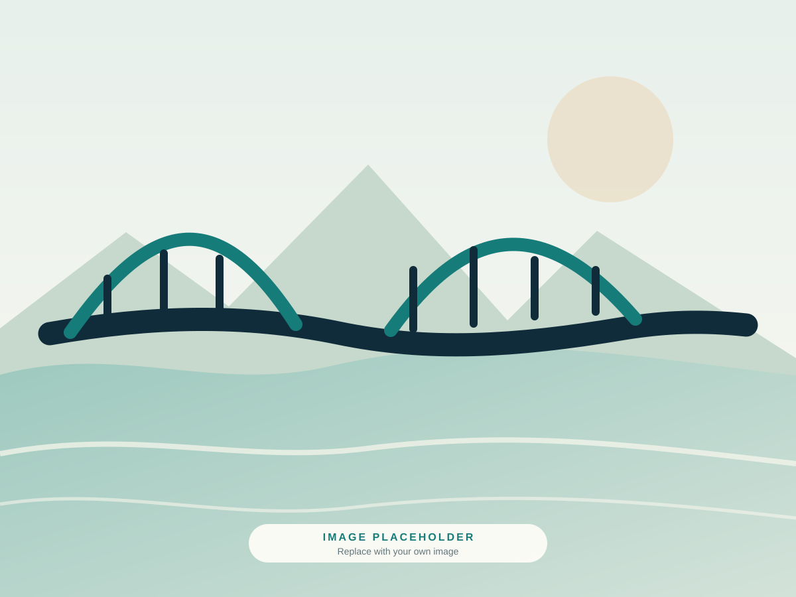

Look for relevant experience
Search for licensed therapists who work with anxiety, phobias, or cognitive behavioral therapy (CBT). Directories may let you filter by location and insurance.
Support, on your terms
If bridge-related fear is affecting your life, a mental health professional can help you understand your experience and consider options together.

A place to start
You can ask questions before deciding whether a provider is right for you. It's okay to take your time.
Search for licensed therapists who work with anxiety, phobias, or cognitive behavioral therapy (CBT). Directories may let you filter by location and insurance.
You might ask how they work with phobias, how they involve you in decisions, and what happens if a step feels too difficult.
Share what feels relevant—triggers, daily impact, health needs, accessibility, cost, or cultural preferences. You don't need a perfect explanation.
External resources
These organizations offer general mental health information or provider-finding tools. Availability and services vary by location.
If you or someone else may be in immediate danger, contact your local emergency services. In the U.S. and its territories, call or text 988 for the Suicide & Crisis Lifeline. If you are elsewhere, use your local crisis service.